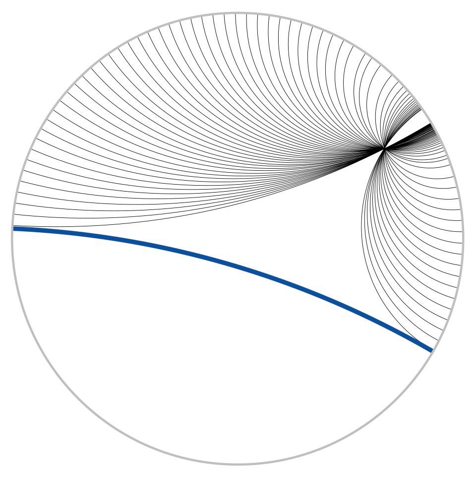

For more than two thousand years the fifth postulate of Euclid's Elements was regarded as a blemish: a statement that looked like a theorem but resisted every attempt at proof. The resolution of the problem in the first half of the nineteenth century — the discovery that a perfectly consistent geometry exists in which the postulate fails — is one of the great conceptual turning points in mathematics. It separated the question "what is true in geometry?" from the question "what is true of physical space?", it gave birth to the axiomatic method in its modern form, and through Gauss and Riemann it led directly to differential geometry and to the geometric theory of gravitation.
This course treats the subject at the level of a first graduate course. An introductory treatment presents the three model worlds (plane, sphere, saddle), the idea of a geodesic, Girard's theorem and the qualitative meaning of curvature. Here we make everything precise. We begin with neutral geometry — the theorems that survive without the parallel postulate — and prove the Saccheri–Legendre theorem. We then develop spherical geometry and spherical trigonometry in full, construct the hyperbolic plane in four equivalent models (the hyperboloid, the upper half-plane, the Poincaré disk and the Beltrami–Klein disk), compute its isometry group PSL(2,ℝ), classify its isometries, and derive hyperbolic trigonometry and the area formula. We study discrete groups of isometries (Fuchsian groups), the tilings they produce, and the modular group. Finally we place everything inside the framework of Gauss's intrinsic theory of surfaces — curvature, the Theorema Egregium and the Gauss–Bonnet theorem — and of Riemann's generalisation to manifolds of any dimension, which is the mathematical language of general relativity.
Notation. Throughout, angles are measured in radians unless degrees are explicitly indicated. The hyperbolic plane is normalised to have constant curvature −1 and the unit sphere has curvature +1; formulas for curvature K = ±1/R² follow by scaling lengths by R. We write H = {z ∈ ℂ : Im z > 0} for the upper half-plane, D = {z ∈ ℂ : |z| < 1} for the unit disk, and ⟨·,·⟩ for the Lorentzian form on ℝ³ introduced in Lesson 4. Prerequisites are linear algebra, multivariable calculus, basic complex analysis (Möbius maps) and some familiarity with groups.
In this course, you will:
- 1.Prove what can and cannot be derived without the parallel postulate, and trace the history from Saccheri to Beltrami
- 2.Develop spherical and elliptic geometry, including a complete proof of Girard's theorem
- 3.Derive the spherical laws of cosines and sines and apply them to geodesy
- 4.Construct the hyperboloid model and its isometry group O⁺(2,1)
- 5.Study the upper half-plane with metric ds² = (dx² + dy²)/y², its geodesics and its distance formula
- 6.Classify the isometries of the hyperbolic plane through the trace of a matrix in PSL(2,ℝ)
- 7.Translate between the Poincaré disk, the Beltrami–Klein disk and the other models
- 8.Derive hyperbolic trigonometry and the angle of parallelism
- 9.Prove that the area of a hyperbolic triangle equals π minus its angle sum
- 10.Study Fuchsian groups, triangle groups, regular tilings and the modular group
- 11.Define Gaussian curvature and prove that it is intrinsic (the Theorema Egregium)
- 12.Prove the Gauss–Bonnet theorem and use it to classify constant-curvature surfaces
- 13.Connect all of this to Riemannian geometry and to Einstein's theory of gravitation
Figures


Contents
Neutral Geometry and the Parallel Postulate Lesson 2
Spherical and Elliptic Geometry Lesson 3
Spherical Trigonometry Lesson 4
The Hyperboloid Model Lesson 5
The Upper Half-Plane Lesson 6
Möbius Transformations and the Classification of Isometries Lesson 7
The Poincaré Disk and the Beltrami–Klein Model Lesson 8
Hyperbolic Trigonometry Lesson 9
Area and Angle Defect Lesson 10
Fuchsian Groups, Triangle Groups and Tilings Lesson 11
Gaussian Curvature and the Theorema Egregium Lesson 12
The Gauss–Bonnet Theorem Lesson 13
Riemannian Geometry and General Relativity Problem Set
60 problems Assessment
Randomly generated questions
Image sources
- Figure 1 · Lobachevsky. By Lev Kryukov. Public domain. From Wikimedia Commons: https://commons.wikimedia.org/wiki/File:Lobachevsky.jpg
- Figure 2 · Poincare disc hyperbolic parallel lines. By Trevorgoodchild. Public domain. From Wikimedia Commons: https://commons.wikimedia.org/wiki/File:Poincare_disc_hyperbolic_parallel_lines.svg